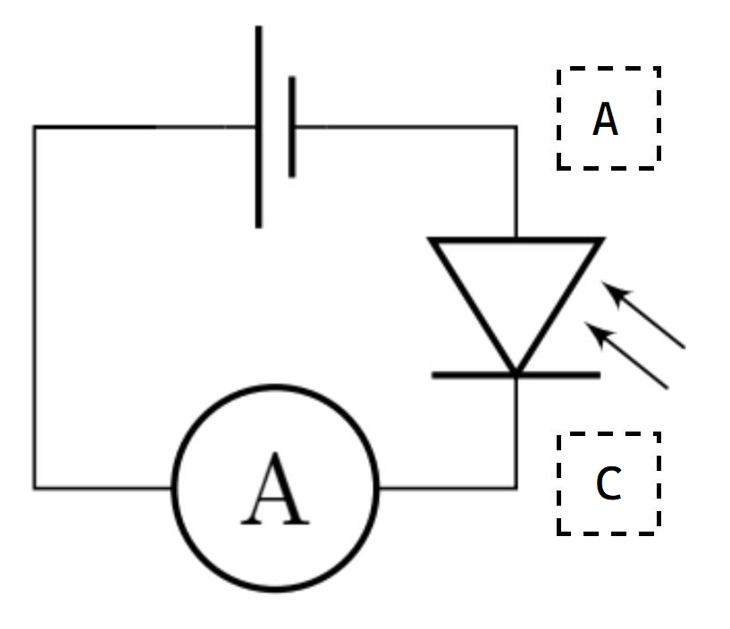
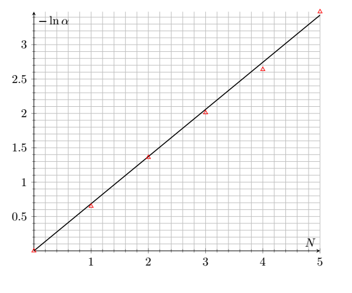
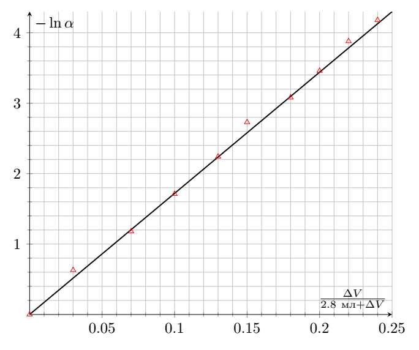
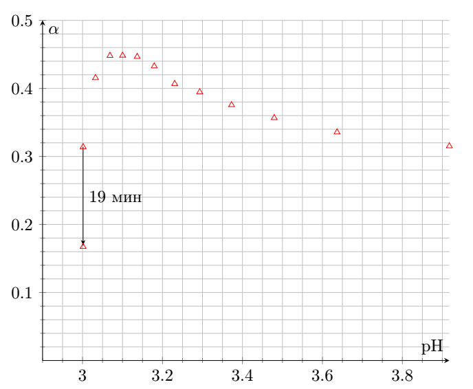
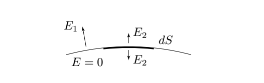
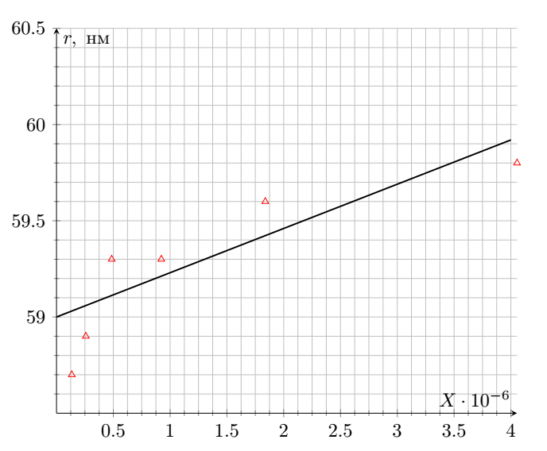

X25 (2025) — English translation

Background radiation $I_\mathrm{back}=1.6~\mathrm{mA}$. The transmittance is then given by \[\alpha = \frac{I-I_\mathrm{back}}{I_0 - I_\mathrm{back}}\]
When making measurements in this part, it is important to take into account reflections at the interfaces, i.e. to study the light intensity for a given $N$, place $N$ cuvettes with a milk solution and $5-N$ cuvettes with clean water.
The volume layer $dV=S \cdot dL$ contains $dN=dV\cdot n$ micelles, each of which absorbs light falling on it. Then since the intensity of the absorbed light is proportional to the total absorption area in this layer: $$dI=-I\cdot \frac{dN\delta S}{S}=-I\cdot\delta S\cdot dL\cdot n$$ Integrating this equation, we obtain \[ I = I_0 e^{- L n \, \delta S}\]
In the experiment under consideration, the length of the absorbing layer $L = L_0 \cdot N$ changes. The answer to the previous paragraph implies the linearization \[ \ln \alpha = -N \cdot L_0 n \, \delta S \]
The straight line passes through zero and has a slope coefficient $k_\textbf{A5}=0.668$.

In the experiment under consideration, the concentration of micelles changes. Let their concentration in the original milk solution be $n_0$, then in the one we have considered \[n = n_0 \frac{\Delta V}{V + \Delta V}\], then linearization: \[ \ln \alpha = - \frac{\Delta V}{2.8~\text{mL}+\Delta V} \cdot L_0 n_0 \, \delta S.\]
The straight line passes through zero and has a slope coefficient $k_\textbf{A6}=17.2$.

According to the condition, the effective scattering area of micelles is equal to: 6.5 \cdot 10^{22}~\text{m}^{-3}$ и $P=n_\mathrm{Cas}/n_0$.
The intensity of unscattered light $I_0=337~\mathrm{\mu{}A}$ At the last point, a dependence on time appears and after $20~\mathrm{m}ин$ the intensity value becomes equal to $I_{2,0.2+19}=56.3~\mathrm{\mu{}A}$.
Until the volume reaches $4.0~\mathrm{mL}$, the acid concentration is $c=c_0\frac{\Delta V}{3.0~\mathrm{mL} + \Delta V}$. After reaching the volume $4.0~\mathrm{mL}$ acid concentration \[c = \frac{\frac{c_0}{4} \cdot 3.0~\mathrm{mL} + c_0 \Delta V}{3.0~\mathrm{mL} + \Delta V}.\]To find $\mathrm{pH}$ we solve the quadratic equation, denoting $\mu=210~\text{g}/\text{mol}$ \[ [\mathrm H^+ ]^2 + [\mathrm H^+ ] k_1 - \frac{ck_1}{\mu} = 0\]\[ \mathcal D = k_1^2 + \frac{4 ck_1}{\mu} \quad \Rightarrow \quad [\mathrm H^+ ] = \frac{-k_1 \pm \sqrt{k_1^2 + \frac{4ck_1}{\mu}}}{2} \]Choose the positive root and get two formulas for converting $\Delta V$ to $\mathrm{pH}$ (for the first iteration and for the second) \[ \mathrm{pH} = -\log_{10} \left( \frac{-k_1 + \sqrt{k_1^2 + \frac{4c_0k_1}{\mu} \frac{ \Delta V}{3.0~\mathrm{mL} + \Delta V}}}{2} \right), \quad \mathrm{pH} = -\log_{10} \left( \frac{-k_1 + \sqrt{k_1^2 + \frac{4c_0k_1}{\mu} \frac{ 0.75~\mathrm{mL} + \Delta V}{3.0~\mathrm{mL} + \Delta V}}}{2} \right)\]

The value $\rm pI$ corresponds to $\rm pH$ for $c=c_\text{крит}$
\[\rm pI = 3.0\]
Let on average $P$ micelles stick together into one. This means that the concentration of micelles decreased by $P$ times, and the micelle radius increased by $P^{1/3}$ times. This means $-\ln \alpha \propto nr^6$ will increase $P$ times. Then \[\frac{dP}{dt} = \frac{1}{19~\text{mин}}\frac{\ln \dfrac{I_{2,0.2}-I_\mathrm{back}}{I_0 - I_\mathrm{back}}}{\ln \dfrac{I_{2,0.2+19}-I_\mathrm{back}}{I_0 - I_\mathrm{back}}}=8.1 \cdot 10^{-2} ~1/мин\]
In water there are $\rm pH=7$ and $\rm pI < 7$, so $q < 0$.
Until the volume reaches $4.0~\mathrm{mL}$, the acid concentration is $c=c_0\frac{\Delta V}{3.0~\mathrm{mL} + \Delta V}$, the micelles concentration is $n=n_0 \frac{0.2~\mathrm{mL}}{3.0~\mathrm{mL} + \Delta V}$. After reaching the volume $4.0~\mathrm{mL}$, the acid concentration is \[c = \frac{\frac{c_0}{4} \cdot 3.0~\mathrm{mL} + c_0 \Delta V}{3.0~\mathrm{mL} + \Delta V},\] and the micelle concentration is $n = n_0 \frac{3.0~\mathrm{mL}}{4.0~\mathrm{mL}} \frac{0.2~\mathrm{mL}}{3.0~\mathrm{mL} + \Delta V} $. If the radius of the micelles did not depend on $\rm pH$ or if they did not stick together, then \[-\ln \alpha_\text{th} = nL_0 \cdot \delta S.\]At the same time $\delta S \propto r^6$ and before the start of gluing, the concentration $n$ changes only due to dilution according to the formulas above, therefore \[r = 60~\mathrm{nm} \cdot \left( \frac{\ln \alpha}{-nL_0 \delta S} \right)^{1/6}\]The charge of one molecule of $\kappa$-casein is equal to $q$, which means the charge of the entire micelle is $Nq$. We will consider the micelle as a sphere with a uniform surface charge density $\sigma = Nq/(4\pi r^2)$. In this case, the electric field immediately above the micelle surface is equal to \[E_1 = \frac{1}{4 \pi \varepsilon_0} \frac{Nq}{r^2}\] and the field immediately below the micelle surface is zero. Let us consider a small area of the micelle surface with an area of $dS$. It has a surface charge density of $\sigma$, so it creates an electric field of $E_2=\frac{\sigma}{2 \varepsilon_0}$ on either side of itself. Let us denote the field of the entire rest of the sphere, except for section $dS$, as $E_\text{оsт}$.
The total electric field is the sum of $E_2$ and $E_\text{оsт}$, therefore \[\begin{cases} E_2 + E_\text{оsт} = E_1\\ -E_2 + E_\text{оsт} = 0 \end{cases} \quad \Rightarrow \quad E_\text{оsт} = E_2 = \frac{E_1}{2} = \frac{1}{8 \pi \varepsilon_0}\frac{Nq}{r^2}.\] This means that each $\kappa$-casein molecule is in the field $E_\text{оsт}$ and therefore an electrostatic force \[F = \frac{Nq^2}{8 \pi \varepsilon_0 r^2},\] acts on its end, which is balanced by the elastic force $k(r-r_0)$. In this case, the absolute value of the radius $r$ of the micelle changes very little, which can be confirmed by direct calculation. Final linearization: \[r = r_0 + \frac{N e^2 (9.5 \cdot 10^{-4})^2}{8 \pi \varepsilon_0 k \cdot (60 нм)^2} \left( 10^\mathrm{pH} - 10^{\mathrm{pI}}\right)^2.\]Denote $X= \left( 10^\mathrm{pH} - 10^{\mathrm{pI}}\right)^2$ and remove the point $\rm pH < 3.1$ from the dependence because in them the radius begins to increase, which is associated with the process of gluing micelles

